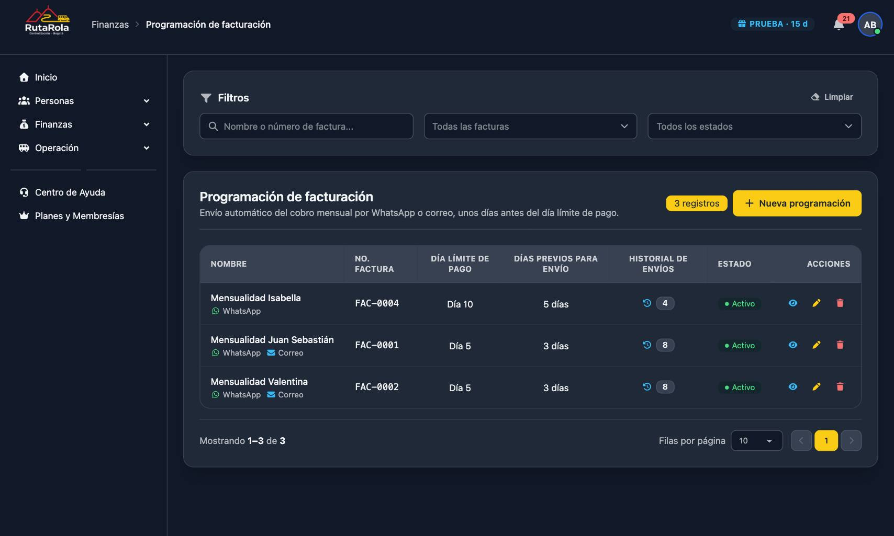
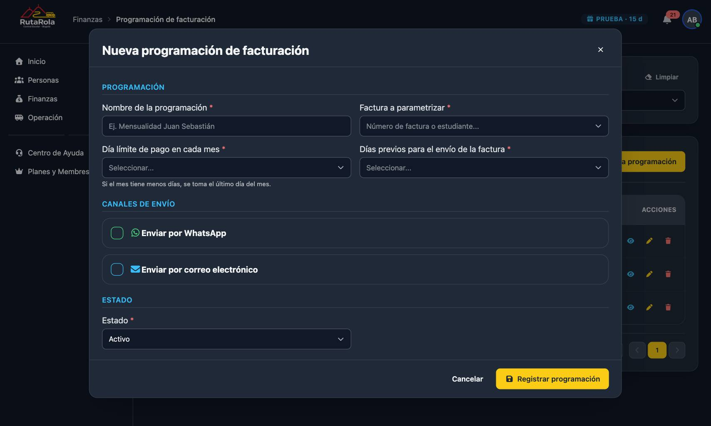
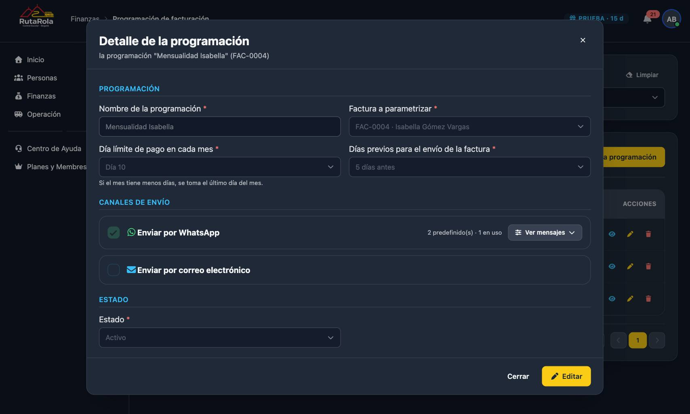
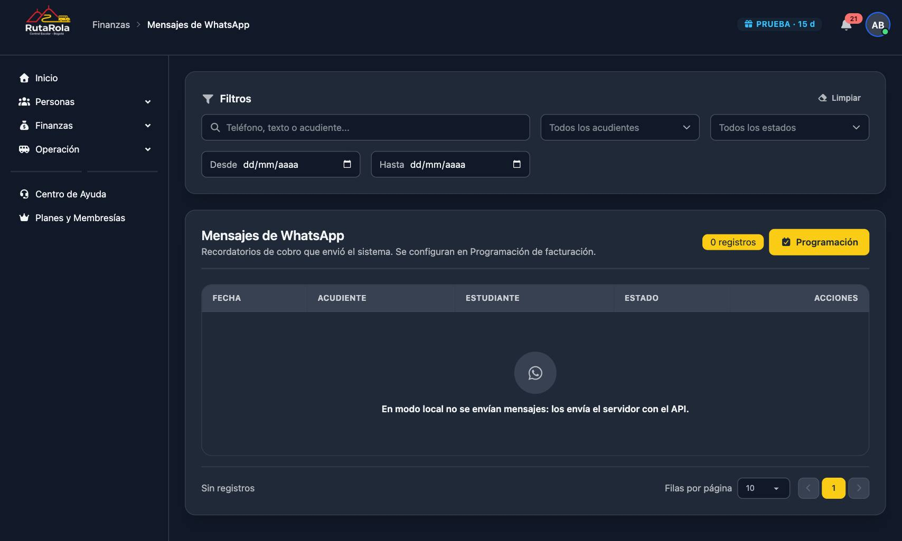

Cómo programar los recordatorios de pago automáticos por WhatsApp y correo para cada factura, y cómo revisar lo que se envió.
Para administradores de la empresa de transporteVersión noviembre 2026
Contenido
Cómo funcionan los recordatorios Cuándo y a quién se envían
Crear una programación Paso a paso
Los mensajes y sus variables Personalizar el texto
Consultar y revisar envíos Historial y mensajes enviados
Preguntas frecuentes
¿Cómo leer este manual?
Menús: Finanzas › Programación de facturación. Botones: Nueva programación. Campos: negrita. Los campos con * son obligatorios.
1. Cómo funcionan los recordatorios
Una programación se hace para una factura. Cada mes, unos días antes del día límite de pago, RutaRola le envía al acudiente el recordatorio de la cuota, por WhatsApp, por correo o por ambos.
Regla
Detalle
Cuándo se envía
Entre el día límite − días previos y el día límite. Ej.: día límite 10 y 5 días previos → se envía desde el día 5.
Cuántas veces
Una vez por canal y por mes.
Si ya pagó
No se envía: solo se recuerdan las cuotas con saldo.
A quién
Al celular (WhatsApp) y al correo del acudiente de la factura.
Si falla
No se reintenta; la campana de notificaciones te avisa del envío fallido.
PlanLos recordatorios automáticos están incluidos desde el plan Esencial. En el plan Gratis puedes ver esta pantalla pero no crear programaciones.
Día límiteEl día límite de la programación es la fecha de vencimiento de cada cuota de esa factura. Las facturas sin programación usan el día límite general de Configuración (por defecto, el 5).
2. Crear una programación

Lista de programaciones con sus canales e historial de envíos.
Entra a Finanzas › Programación de facturación y toca Nueva programación.
Escribe el Nombre de la programación (ej. “Mensualidad Isabella”).
Elige la Factura a parametrizar. Cada factura puede tener una sola programación.
Escribe el Día límite de pago en cada mes (1 a 31). Si el mes tiene menos días, se toma el último día del mes.
Escribe los Días previos para el envío de la factura.
En Canales de envío activa Enviar por WhatsApp, Enviar por correo electrónico o ambos, y configura su mensaje (siguiente capítulo).
Deja el Estado en Activo y toca Registrar programación.

Nueva programación de facturación.
Encuéntralas rápidoEn Inicio, la alerta “Facturas vigentes sin programación” te lleva a las facturas a las que aún no les has programado recordatorio.
3. Los mensajes y sus variables
Al activar un canal, toca Parametrizar mensaje de WhatsApp (o el de correo). Cada canal puede tener varios mensajes guardados, pero solo uno está “En uso”: ese es el que se envía. Con el botón del avión de papel eliges cuál usar.
Variables
Escribe estas palabras entre llaves dentro del mensaje y RutaRola las reemplaza al enviar:
Variable
Se reemplaza por
Ejemplo
{acudiente}
Nombre del acudiente
María Pérez López
{estudiante}
Nombre del estudiante
Juan Sebastián Pérez López
{factura}
Número de factura
FAC-0001
{mes}
Mes que se cobra
noviembre de 2026
{valor}
Valor a pagar
$ 420.000
{fecha_limite}
Fecha límite de pago
5 nov 2026
Ejemplo
Hola {acudiente}, te recordamos que la mensualidad de transporte de {estudiante} de {mes} por {valor} vence el {fecha_limite}. Factura {factura}. ¡Gracias!
Llega así:
Hola María Pérez López, te recordamos que la mensualidad de transporte de Juan Sebastián Pérez López de noviembre de 2026 por $ 420.000 vence el 5 nov 2026. Factura FAC-0001. ¡Gracias!
RecomendacionesEscribe mensajes cortos y amables, incluye los medios de pago (Nequi, transferencia…) y no pongas datos sensibles del estudiante.
4. Consultar y revisar envíos
Toca una programación para consultarla. Junto a cada canal verás cuántos mensajes tiene y cuál está en uso; Ver mensajes los muestra.
La columna Historial de envíos de la lista dice cuántos recordatorios se han enviado; tócala para ver cada envío con su fecha, canal y resultado.
En Finanzas › Mensajes de WhatsApp está el registro de todos los WhatsApp enviados por el sistema, filtrable por fechas.

Detalle de una programación.

Registro de mensajes de WhatsApp.
Pausar o cambiar
Para pausar los recordatorios de una factura, edita su programación y cámbiala a Inactivo. Si la factura se anula o el estudiante se retira, los meses que ya no se cobran tampoco se recuerdan.
5. Preguntas frecuentes
No aparece la factura en la lista
Ya tiene una programación (solo se permite una por factura) o no está vigente.
Un acudiente dice que no le llegó el recordatorio
Revisa el historial de envíos de su programación y la campana de notificaciones: si el envío falló, verifica su celular y correo en Personas › Acudientes. Recuerda que no se envía si la cuota ya está pagada.
¿Puedo enviar un recordatorio manual?
Sí: desde Finanzas › Reportes financieros › Morosos puedes escribirle por WhatsApp a cada acudiente en mora.